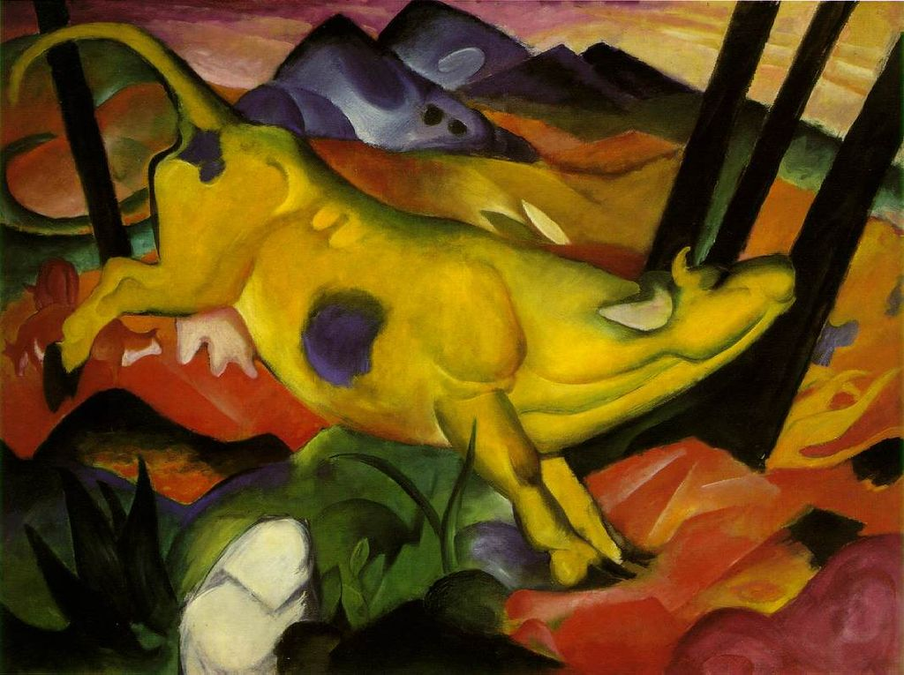

<head>
<meta charset="UTF-8" />
<meta name="keywords" content="drawing, painting" />
<meta name="description" content="drawings by Sunjy" />
<title>Sunjy</title>
<link rel="shortcut icon" type="image/x-icon" href="../../mImages/mCommon/favicon.ico" media="screen" />
<link rel="stylesheet" type="text/css" href="../../mCsses/mCommon/mCssA.css" />
<link rel="stylesheet" type="text/css" href="../../mCsses/mCommon/mCssB.css" />
<link rel="stylesheet" type="text/css" href="../../mCsses/mCommon/mCssC.css" />
<link rel="stylesheet" type="text/css" href="../../mCsses/mCommon/mCssD.css" />
<link rel="stylesheet" type="text/css" href="../../mCsses/mContent/mCssA.css" />
<link rel="stylesheet" type="text/css" href="../../mCsses/mContent/mCssB.css" />
<link rel="stylesheet" type="text/css" href="../../mCsses/mContent/mCssC.css" />
<link rel="stylesheet" type="text/css" href="../../mCsses/mContent/mCssD.css" />
</head>
<script type="text/javascript" src="../../mScripts/mContent/mContentAA.js" /></script>
<script type="text/javascript" src="../../mScripts/mContent/mContentAB.js" /></script>
<script type="text/javascript" src="../../mScripts/mContent/mContentAC.js" /></script>
<script type="text/javascript" src="../../mScripts/mContent/mContentAD.js" /></script>
<script type="text/javascript"></script> 
<script type="text/javascript">
document.write('<div class="mImgAbsolute"></div>');
/*
document.write('<p class="mFontSizeBColor" />From a white paper...</p>');
document.write('<table class="center"><tr><td>');
document.write('');
document.write('</td></tr></table>');
*/
</script>


<script type="text/javascript">
document.write('<p class="mFontSizeBColor" />The Yellow Cow</p>');
document.write('<p class="mFontSizeSColor" />“The Yellow Cow” by Franz Marc is one of Marc’s several depictions of animals in the Expressionist style. The painting depicts a yellow jumping cow, surrounded by a colorful, structured landscape.<br><br>The picture is a contrast between the dynamic yellow frolicking cow and a natural world filled with hidden forms. A back-to-nature movement that swept the artistic communities in the early years of the twentieth century greatly influenced Franz Marc.<br><br>Marc found this nature-oriented quest for spiritual redemption an inspiration for his art. He felt that animals possessed a certain godliness that men had lost. In 1915, during the war, he wrote:<br><br>“People with their lack of piety, especially men, never touched my true feelings,<br>But animals with their virginal sense of life awakened all that was good in me.”<br><br>Yellow Cow dates to Marc’s formative phase, during which he developed the color symbolism that permeates the painting. The symbolist painters used mythological and dream imagery.<br><br>The symbols used by symbolism are not the familiar emblems of mainstream iconography but intensely personal, private, obscure, and ambiguous references. More a philosophy than an actual style of art. <br><br>For Marc, blue was equated with spirituality and maleness, yellow with femininity and sensuality, and red with the earth. The colors in the painting are symbolically representing the sense of the objects in the artwork. <br><br>The Russian painter Wassily Kandinsky greatly influenced Marc’s use of color in this work.<br><br>Franz Marc worked with Kandinsky in the formation of the Blue Rider (Der Blaue Reiter) group of like-minded artists. The group released the “The Blue Rider Almanac” and held two exhibits.<br><br>More of each were planned, but the outbreak of World War I in 1914 ended these plans. Kandinsky returned to Russia via Switzerland and Sweden.<br><br>Marc was drafted into the German Army, where he designed military camouflage and painted tarpaulin covers in styles varying “from Manet to Kandinsky,” to conceal troops and equipment from enemy aircraft.<br><br>Expressionism<br><br>Expressionism is a modernist movement, originating in Germany at the beginning of the 20th century. It presents the world from a subjective perspective, distorting it radically for the emotional effect to evoke moods or ideas.<br><br>Expressionist artists sought to express the meaning of emotional experience rather than physical reality. Expressionism developed as a new style before the First World War. It remained popular during the Weimar Republic, particularly in Berlin.<br></p>');
document.write('<table class="center" /><tr><td>');
document.write('<br>The picture is a contrast between the dynamic yellow frolicking cow and a natural world filled with hidden forms. A back-to-nature movement that swept the artistic communities in the early years of the twentieth century greatly influenced Franz Marc.<br><br>Marc found this nature-oriented quest for spiritual redemption an inspiration for his art. He felt that animals possessed a certain godliness that men had lost. In 1915, during the war, he wrote:<br><br>“People with their lack of piety, especially men, never touched my true feelings,<br>But animals with their virginal sense of life awakened all that was good in me.”<br><br>Yellow Cow dates to Marc’s formative phase, during which he developed the color symbolism that permeates the painting. The symbolist painters used mythological and dream imagery.<br><br>The symbols used by symbolism are not the familiar emblems of mainstream iconography but intensely personal, private, obscure, and ambiguous references. More a philosophy than an actual style of art. <br><br>For Marc, blue was equated with spirituality and maleness, yellow with femininity and sensuality, and red with the earth. The colors in the painting are symbolically representing the sense of the objects in the artwork. <br><br>The Russian painter Wassily Kandinsky greatly influenced Marc’s use of color in this work.<br><br>Franz Marc worked with Kandinsky in the formation of the Blue Rider (Der Blaue Reiter) group of like-minded artists. The group released the “The Blue Rider Almanac” and held two exhibits.<br><br>More of each were planned, but the outbreak of World War I in 1914 ended these plans. Kandinsky returned to Russia via Switzerland and Sweden.<br><br>Marc was drafted into the German Army, where he designed military camouflage and painted tarpaulin covers in styles varying “from Manet to Kandinsky,” to conceal troops and equipment from enemy aircraft.<br><br>Expressionism<br><br>Expressionism is a modernist movement, originating in Germany at the beginning of the 20th century. It presents the world from a subjective perspective, distorting it radically for the emotional effect to evoke moods or ideas.<br><br>Expressionist artists sought to express the meaning of emotional experience rather than physical reality. Expressionism developed as a new style before the First World War. It remained popular during the Weimar Republic, particularly in Berlin.<br>" />');
document.write('</td></tr></table>');
</script>


